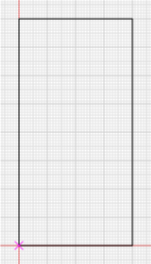
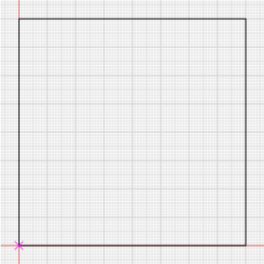
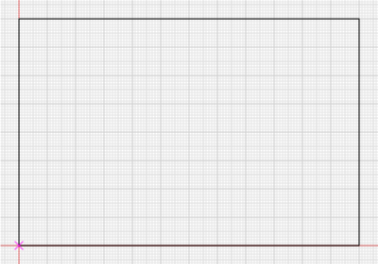
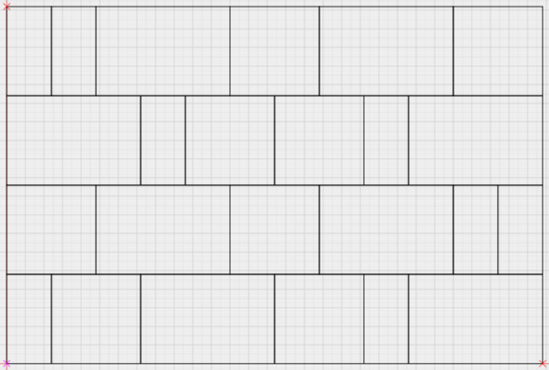
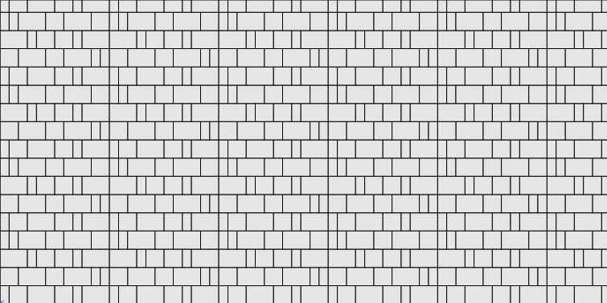
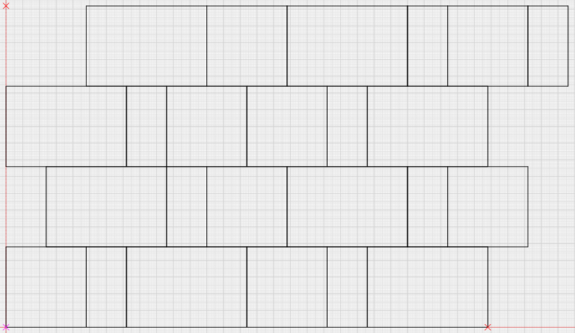
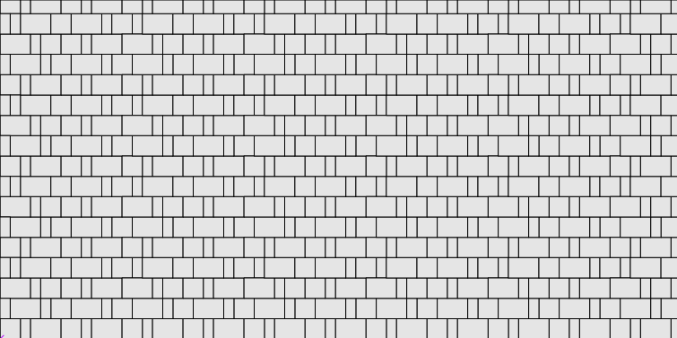

There are several varieties of this set, with different number of shapes and forms in different
sizes. Typically, the width of tiles is multiple to the smallest tile. For the simplicity and
clarity, let’s assume that the set consists of three tiles:
|  |  |  |
| 60x120 | 120x120 | 180x120 |
During creating the pattern you need to achieve the effect of chance tiles alternation.
Certainly you need to make a few rows of tiles with significant number of pieces in each one.
Surely, due to the fact that all the tiles are fabricated as a set, they all must be used.
Therefore, you need to put all the tiles of one or more sets in each row.
Here is the example of the 4 rows; each of them is laid with two sets of tiles with six pieces in a row:

So effect of chance within the rectangle is reached. How will the masonry look like? Like a well-defined path.

It looks like that because the sides of the pattern are constructed like straight lines.
What do you need to do? Shift rows horizontally relatively to each other. In this case all rows
must have the same length. Shift the ranks from zero mark for distance multiple to the width of
the smallest tile. Like this:

Now masonry looks chaotic:

P.S.
- You can get the "right" pattern from "wrong" not only using offset rows.
It’s enough to move one tile (or more) from the beginning to the end in a row.
- When you create a pattern avoid a situation where the joints in adjacent rows of tiles
arranged strictly over each other. It spoils the effect of randomness.